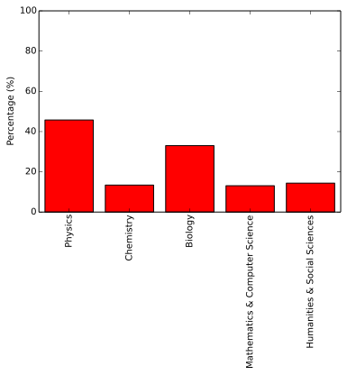

Recently I was challenged to show that computational science is important to biologists, and, more importantly, that biologists care about learning how to develop quality software. I am not a biologist. While I find the subject fascinating I cannot make any broad claims on the topic or hope to speak for all biologists. So I turned to Software Carpentry.
My experience teaching Software Carpentry and related bootcamps has been that biologists are always a significant portion of the student population. In order to demonstrate this I asked to have access to anonymized answers to part of the pre-assessment survey. Specifically, I was interested in the "Which of the following most closely aligns with your primary discipline?" question. With a big assist from Amy Brown I obtained the data I was looking for.
Almost immediately, I was confronted with the problem of who exactly is a biologist, physicist, and so on. The pre-assessment survey options are too fine grained for purposes here. For example, I consider astrophysicist and geologists both to be physicists. Furthermore, since the survey question is a check-box type the students could select multiple options. Their selections may span multiple domains. Finally, there is a pesky "Other" option which allows the students to submit any discipline they desire. This leads to the conundrum of which domain does the discipline "Data Analysis" go in? All of them I hope. This survey question certainly does not yield a clean taxonomy.
To coarsen the data, I chose the following five domains to group disciplines into: physics, chemistry, biology, mathematics & computer science, and humanities & social science. Is this grossly unfair to some disciplines? Yes. Does it work? Double yes. In the spirit of openness, all of the data and analysis is available at this repository. You can also view the IPython notebook where I did my analysis. Feel free to criticize my groupings in the comments.
The data that Amy provided me with was collected from 306 students over the most recent 9 or 10 bootcamps. This is a large enough sample size to be able to say something meaningful about the student populous. From Figure 1 & Table 1, we can see that my intuition turned out to be correct.
Roughly a third of the participants in the bootcamps come from a biologically oriented field! This is second only to the physics-related disciplines. Moreover, the biologists far outstrip their counterparts in the other domains. So if Software Carpentry bootcamps are any measure of interest in software development best practices - and I think they are - then it is clear that the biology domain is thriving.

Figure 1: Percentage of Software Carpentry bootcamp students by domain.
These percentages sum to greater than 100% because students may select more that one discipline.
| Domain | Percentage (%) |
|---|---|
| Physics | 45.75 |
| Chemistry | 13.40 |
| Biology | 33.01 |
| Mathematics & Computer Science | 13.07 |
| Humanities & Social Sciences | 14.38 |
Table 1: Results of Figure 1 in tabular form.
Originally posted 2013-09-30 by Anthony Scopatz in Assessment, Teaching.
comments powered by Disqus